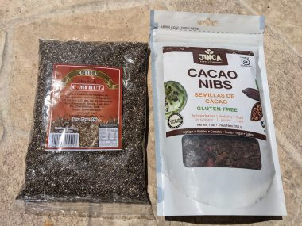

コスタリカの海辺の田舎まちでノマドワーク兼お試し移住体験 4
前の記事
帰国の日。トロント行のフライトは午後２時だったが、念のため早めに朝8時にエステリロスエステのエアビーを出た。渋滞にあうこともなく、10時にはサンホセの国際空港に到着した。
早すぎてエアカナダのカウンターが開いておらず、列に並んで1時間近く待った。オンラインでチェックインは済ませていたし、預ける荷物はないのだが、私はカナダのパスポートを持っていないので、カナダに帰るときはいつも航空会社の職員がPRカードを保持していることを確認する必要があるのでカウンターに並ばなければいけなかったのだ。
とはいえ、コスタリカは出国審査があるので速めに空港に着いておくに越したことはない。この日は荷物検査も出国審査もスムーズで、カナダへの帰路に着いた。
結局、コスタリカ滞在中は、ツアーに参加するなどといった観光も一切せず、レストランにも一件もいかなかった。海とともにおとなしく日常を過ごす、まさしくリハビリのような旅で、J次郎の心と体は回復した。
カナダに持って帰ったものは、チアシードとカカオニブ。いずれもコスタリカ産。エステリロスから車で30分で行けるハコ（Jaco)に行ったときにTrust Martという地元のスーパーで購入。こういった地元企業の製品は、ウオールマート系のスーパーではなかなか見つけられない。
チアシード２５０ｇ、2250コロン（約400円）
カカオニブ２００ｇ、3400コロン（約620円）

よく考えたら、チアシードって発芽可能な種であり、買ってから失敗した、とおもった。
カナダに持ち込めるかどうか心配だったが、申告して、入国審査のときに直接見せたらＯＫだった。女性の入国審査官だったのですぐわかってくれてよかったのかも。ああ、カカオニブと、チアシードね、OKよ、と言われ、問題なかったのでほっとした。
その他、コスタリカに短期滞在して気になった点は、
停電ーＷｉｆｉ環境は問題ないが、停電があるとインターネットが使えなくなる。1か月の滞在期間中、数分くらいの停電が週に1回はあった。すぐに復旧しない場合もあるそう。ちなみに、2件目に泊まったエアビーは電気料金別払いのところだったが、3週間で７５カナダドルだった。電気料金高い。
治安ー治安は良いといわれるが、中南米のなかでは、という意味で、日本とは比べ物にならない。暗くなるとどの家もクリスマスのイルミネーション並みの電飾を表につけ、一晩中つけっぱなしにしなければいけない。まぶしいので、寝るときは遮光カーテンもしくはアイマスクが必要。ゲート内のコミュニティーに住まない場合は大型犬を含む複数の犬を防犯上飼う必要がある。
車社会ー車がないと不便。さらに物価が高いので、車はカナダや日本より1.5倍くらい高いそう。そして海沿いは潮風の影響で錆びやすい。
良い点は、
水道水が安全ー飲んでも危険ではないので、サラダやスムージーに使う野菜を水道水で洗って水が付いた状態で口にすることもできるし、歯磨きにもそのまま水道水を使うことができる。ただし、不純物が多いので、飲み水は買うのが一般的。ちなみに水はどこのスーパーでも大体６リットルで2200コロン（約400円）くらい。
景観が良いー緑が豊かで野生動物も身近に感じられる。空気も良い。満点の星空も美しい。
時差ーカナダとの時差が２～３時間しかなく、カナダ時間で働けるのでノマドやワーケーションに適している。
フルーツは手ごろな値段でおいしい。乳製品もおいしい。Product Tulinというハコ（Javo)周辺の農場で作られている地元産のチーズがおいしかった。アトピー体質にもOKの水牛のチーズも、地元のスーパーなら手に入る。
ここまで、書いていて、ふと、あれ、日本人なら、沖縄の田舎でよくないか？という気がしてきた。かつて2年ほど沖縄で暮らした記憶がよみがえってきた。
ネックになるのはカナダとの時差だけれど、生活費が同じくらいであれば、治安が良いに勝るものはない。それに沖縄の海は透明度が高く、波が穏やかでのんびりと安全に海水浴ができる。
沖縄のひとも出会ったひとはいいひとばかりだったな。
なんだ、この、青い鳥探し的なオチは、、、。
 にほんブログ村
にほんブログ村
 にほんブログ村
にほんブログ村